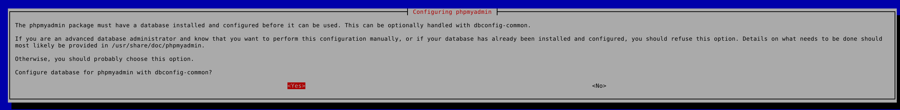

23.50 6.2.2022
Kirjoitin sudo apt-get install phpmyadmin komentotulkkiin ja painoin enter. Komentokenttään ilmestyi asennus-wizardi. Valitsin ensimmäiseksi että serveri on apache2
22.52
Seuraavaksi valitsin yes
Seuraavaksi valitsin Unix socket. En oiken tiennyt mikä oli valinnan idea
Seuraavaksi valitaan mahdollisesti salausmenetelmä, en ole aivan varma
Seuraavaksi käyttäjätunnuksia ja salasanoja
22.54
Virheilmoitus, jotakin oli mennyt väärin.
22.59
Tein uudistuksen siten, että laitoin ensin apache2:n pois päältä komennolla sudo sevice apache2 stop. Lopputulos oli kuitenkin sama.
23.25
Olen googlannut virheilmoituksen mutta en ole vielä löytänyt vastausta. Mietin että voisiko olla niin että debian tietokoneesta puuttuu MySQL serveri, nimittäin yllä oleva ilmoitus herjaa siitä että se ei pysty yhdistämään MySQL serveriin
23.47
Yritin asentaa mySQL näiden ohjeiden mukaisesti. Se ei kuitenkaan onnistunut.
“How To Install the Latest MySQL on Debian 10.” DigitalOcean, 25 July 2019, https://www.digitalocean.com/community/tutorials/how-to-install-the-latest-mysql-on-debian-10. Accessed 8 February 2022.